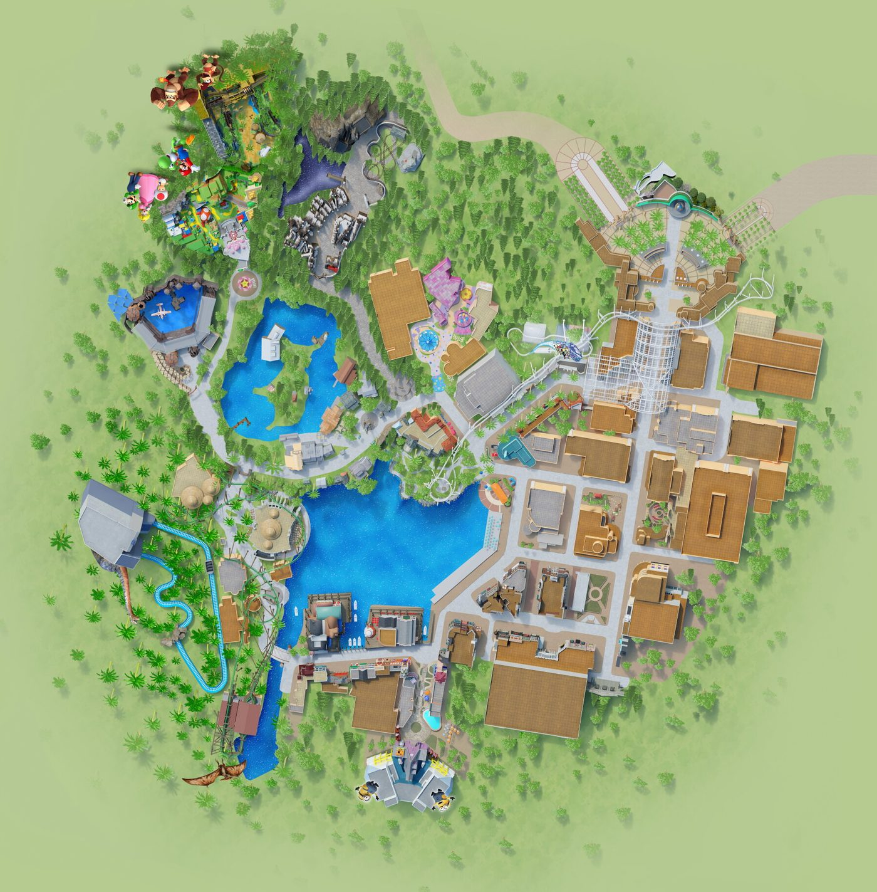
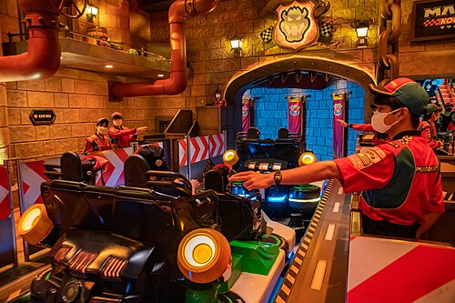
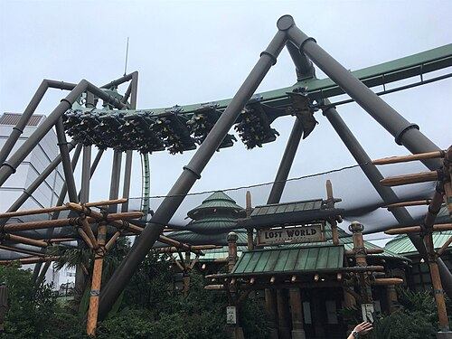
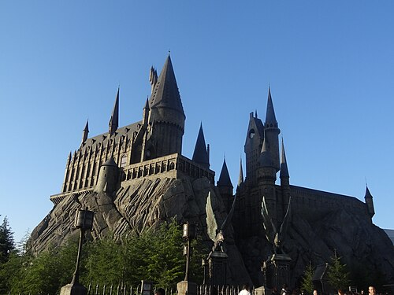
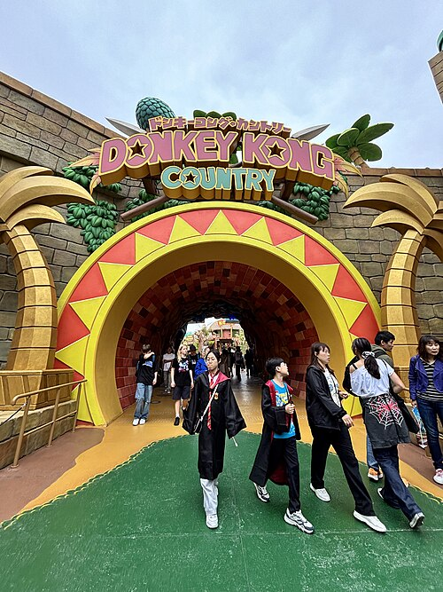
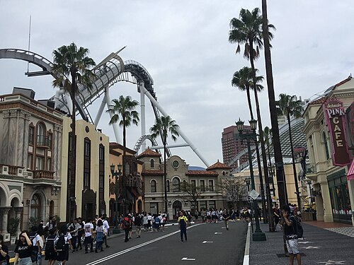
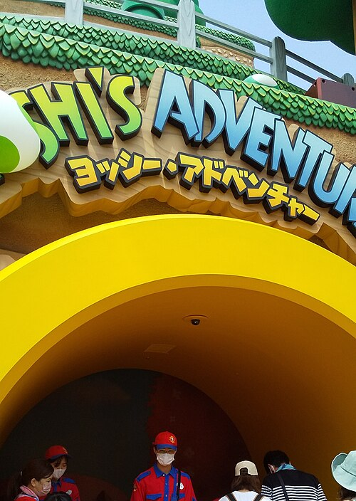
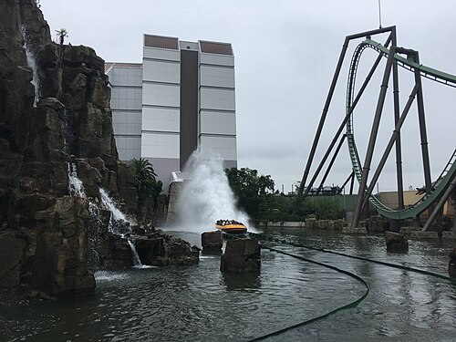
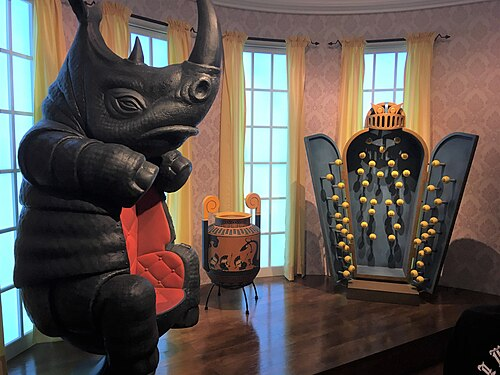
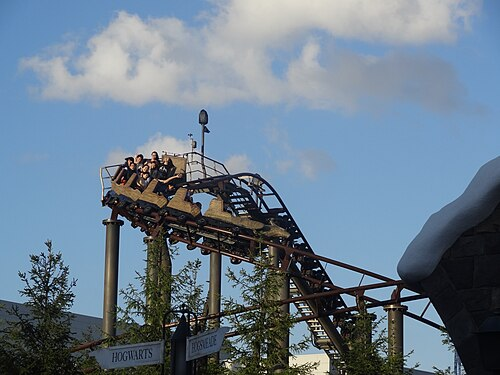

항공 + 숙소 정보
✈️ 항공 정보
| 날짜 | 구분 | 시간 |
|---|---|---|
| 12/12 (토) | 간사이공항 도착 | 09:30 |
| 12/15 (화) | 간사이공항 출발 | 18:00 |
🏠 숙소 정보
오사카부 오사카시 츄오구 마츠야마치 스미요시 6-26
eninal MACCHAMACHI 4F
大阪府大阪市中央区松屋町住吉 6-26 eninal MACCHAMACHI 4F
여행 체크 포인트
📋 체크 포인트
여행 필수 준비물
🛄 서류 · 결제
📱 전자기기
🧥 옷 · 날씨 대비
🧳 기타
택스리펀 (면세) 새 방식
🛒 1. 쇼핑할 때
✈️ 2. 간사이공항 출국 방법
- 장소대한항공 · 아시아나항공은 제1터미널 4층 국제선 출발 로비예요. 면세 절차 단말기(키오스크)와 세관 검사 장소는 이 출발 로비의 위탁 수하물 맡기는 곳 앞쪽에 있어요
- ① 단말기 찾기체크인 전에 먼저 면세 절차 단말기(키오스크)부터 찾아요
- ② 여권 스캔단말기에 여권을 스캔하면 세관 확인이 시작돼요
- ③ 결과 확인GREEN이면 검사 없이 완료예요. RED이면 산 물건을 전부 들고 세관 검사 장소로 가서 확인받아요
- ④ 확인 완료 후그다음 캐리어 위탁 → 출국
💰 3. 환급받기
- 환급 금액세관 확인이 끝나면 소비세 상당액(10%)이 환급돼요
- 누가 주나요물건을 산 면세 매장 또는 그 매장이 맡긴 환급 업체가 지급해요
- 기한구매일로부터 90일 이내 출국 절차 완료 (이번 여행은 4일 안이라 문제없어요)
• 확인은 영수증 1장 단위예요. 한 영수증의 물건 중 하나라도 없거나 썼다면 그 영수증 전체가 환급 불가예요.
• 이미 쓰거나 먹은 물건이 있으면 단말기를 쓰지 말고 세관 직원에게 먼저 신고해요.
• 절차 때문에 비행기를 놓쳐도 세관과 항공사 모두 보상이 없어요. 4일차는 18:00 출발이라 15:00 전후 공항 도착을 추천해요.
출처: 일본 관광청 여행자용 안내문 · 일본정부관광국(JNTO) · MATCHA (2026.10 기준)
상황별 일본어
🔢 숫자 1~10
| 1 | 一 (いち) 이치 |
| 2 | 二 (に) 니 |
| 3 | 三 (さん) 산 |
| 4 | 四 (よん) 욘 |
| 5 | 五 (ご) 고 |
| 6 | 六 (ろく) 로쿠 |
| 7 | 七 (なな) 나나 |
| 8 | 八 (はち) 하치 |
| 9 | 九 (きゅう) 큐 |
| 10 | 十 (じゅう) 주 |
💰 큰 숫자
| 20 | 二十 (にじゅう) 니주 |
| 30 | 三十 (さんじゅう) 산주 |
| 50 | 五十 (ごじゅう) 고주 |
| 100 | 百 (ひゃく) 햐쿠 |
| 1,000 | 千 (せん) 셍 |
| 10,000 | 一万 (いちまん) 이치만 |
💴 가격 말하기 (엔)
| 500엔 | 五百円 (ごひゃくえん) 고햐쿠엔 |
| 1,000엔 | 千円 (せんえん) 셍엔 |
| 3,000엔 | 三千円 (さんぜんえん) 산젠엔 |
| 5,000엔 | 五千円 (ごせんえん) 고셍엔 |
| 8,000엔 | 八千円 (はっせんえん) 핫셍엔 |
| 10,000엔 | 一万円 (いちまんえん) 이치만엔 |
👥 사람 수
| 1명 | 一人 (ひとり) 히토리 |
| 2명 | 二人 (ふたり) 후타리 |
| 3명 | 三人 (さんにん) 산닝 |
| 4명 | 四人 (よにん) 요닝 |
| 5명 | 五人 (ごにん) 고닝 |
| 6명 | 六人 (ろくにん) 로쿠닝 |
🍴 식당에서 듣는 질문
| 이렇게 물어봐요 | 뜻 / 이렇게 대답해요 |
|---|---|
| 何名様ですか 난메이사마데스카 | 몇 분이세요? 👉 4人です 요닌데스 |
| おタバコは吸われますか 오타바코와 스와레마스카 | 담배 피우세요? 👉 吸いません 스이마셍 |
| 店内でお召し上がりですか、お持ち帰りですか 텐나이데 오메시아가리데스카, 오모치카에리데스카 | 먹고 가세요, 포장이세요? 👉 店内で / 持ち帰りで 텐나이데 / 모치카에리데 |
| ご注文はお決まりですか 고추몽와 오키마리데스카 | 주문 정하셨어요? 👉 これをお願いします / もう少し待ってください 고레오 오네가이시마스 / 모-스코시 맛테 구다사이 |
| 以上でよろしいですか 이조-데 요로시이데스카 | 주문은 이게 다예요? 👉 はい、大丈夫です 하이, 다이조부데스 |
| お会計は別々ですか、ご一緒ですか 오카이케이와 베쓰베쓰데스카, 고잇쇼데스카 | 계산은 따로예요, 같이예요? 👉 別々で / 一緒で 베쓰베쓰데 / 잇쇼데 |
| 少々お待ちください 쇼-쇼- 오마치쿠다사이 | 잠시만 기다려 주세요 👉 はい 하이 |
| 満席です。お待ちになりますか 만세키데스. 오마치니 나리마스카 | 자리가 꽉 찼어요. 기다리시겠어요? 👉 待ちます / 大丈夫です(괜찮아요) 마치마스 / 다이조부데스 |
🛍️ 쇼핑 · 계산대에서 듣는 질문
| 이렇게 물어봐요 | 뜻 / 이렇게 대답해요 |
|---|---|
| 袋はご利用ですか 후쿠로와 고리요-데스카 | 봉투 필요하세요? (유료) 👉 お願いします / いりません 오네가이시마스 / 이리마셍 |
| ポイントカードはお持ちですか 포인토카-도와 오모치데스카 | 포인트카드 있으세요? 👉 ありません 아리마셍 |
| 免税ですか 멘제이데스카 | 면세로 하시나요? 👉 はい、免税でお願いします 하이, 멘제이데 오네가이시마스 |
| パスポートをお願いします 파스포-토오 오네가이시마스 | 여권 보여 주세요 👉 はい、どうぞ 하이, 도-조 |
| お支払いはどうされますか 오시하라이와 도- 사레마스카 | 결제는 어떻게 하세요? 👉 カードで / 現金で 카-도데 / 겐킨데 |
| 温めますか 아타타메마스카 | (편의점) 데워 드릴까요? 👉 お願いします / 大丈夫です 오네가이시마스 / 다이조부데스 |
| お箸はご利用ですか 오하시와 고리요-데스카 | 젓가락 필요하세요? 👉 はい、お願いします / いりません 하이, 오네가이시마스 / 이리마셍 |
🏨 숙소에서 듣는 질문
| 이렇게 물어봐요 | 뜻 / 이렇게 대답해요 |
|---|---|
| お名前をお願いします 오나마에오 오네가이시마스 | 성함을 말씀해 주세요 👉 (이름)です (이름)데스 |
| 何泊のご予定ですか 난파쿠노 고요테-데스카 | 몇 박 예정이세요? 👉 3泊です 삼파쿠데스 |
| お荷物をお預かりしましょうか 오니모쓰오 오아즈카리시마쇼-카 | 짐 맡아 드릴까요? 👉 お願いします 오네가이시마스 |
🛂 입국심사에서 듣는 질문
| 이렇게 물어봐요 | 뜻 / 이렇게 대답해요 |
|---|---|
| 入国の目的は何ですか 뉴-코쿠노 모쿠테키와 난데스카 | 입국 목적이 뭐예요? 👉 観光です 캉코-데스 |
| 何日間滞在しますか 난니치칸 타이자이시마스카 | 며칠 머무세요? 👉 4日間です 욧카칸데스 |
| どこに泊まりますか 도코니 토마리마스카 | 어디서 묵으세요? 👉 大阪のホテルです 오사카노 호테루데스 |
👋 기본 인사
| 안녕하세요 | こんにちは 곤니치와 |
| 감사합니다 | ありがとうございます 아리가토 고자이마스 |
| 실례합니다 / 죄송합니다 | すみません 스미마셍 |
| 네 / 아니요 | はい / いいえ 하이 / 이이에 |
| 괜찮아요 | 大丈夫です 다이조부데스 |
🍴 식당
| N명이에요 (예: 4명) | 4人です 요닌데스 |
| 메뉴판 주세요 | メニューをください 메뉴-오 구다사이 |
| 이거 주세요 | これをください 고레오 구다사이 |
| 추천 메뉴가 뭐예요? | おすすめは何ですか 오스스메와 난데스카 |
| 물 주세요 | お水をください 오미즈오 구다사이 |
| 여기요! (직원 부를 때) | すみません 스미마셍 |
| 계산해 주세요 | お会計お願いします 오카이케이 오네가이시마스 |
| 카드 돼요? | カードは使えますか 카-도와 쓰카에마스카 |
| 따로 계산해 주세요 | 別々でお願いします 베쓰베쓰데 오네가이시마스 |
| 맛있어요! | おいしいです 오이시이데스 |
🛍️ 쇼핑
| 이거 얼마예요? | これはいくらですか 고레와 이쿠라데스카 |
| 입어 봐도 돼요? | 試着してもいいですか 시차쿠시테모 이이데스카 |
| 다른 색 있어요? | 他の色はありますか 호카노 이로와 아리마스카 |
| 면세 되나요? | 免税できますか 멘제이 데키마스카 |
| 봉투 주세요 | 袋をください 후쿠로오 구다사이 |
| 그냥 볼게요 | 見ているだけです 미테이루다케데스 |
🚇 길 · 교통
| ○○는 어디예요? | ○○はどこですか ○○와 도코데스카 |
| 화장실이 어디예요? | トイレはどこですか 토이레와 도코데스카 |
| 이 전철 ○○에 가요? | この電車は○○に行きますか 고노 덴샤와 ○○니 이키마스카 |
| 몇 번 승강장이에요? | 何番ホームですか 난반 호-무데스카 |
| 얼마나 걸려요? | どのくらいかかりますか 도노쿠라이 가카리마스카 |
| 사진 찍어 주세요 | 写真を撮ってください 샤신오 톳테 구다사이 |
🏨 숙소
| 체크인 부탁해요 | チェックインお願いします 첵쿠인 오네가이시마스 |
| 짐 맡길 수 있나요? | 荷物を預かってもらえますか 니모쓰오 아즈캇테 모라에마스카 |
| 와이파이 비밀번호가 뭐예요? | Wi-Fiのパスワードは何ですか 와이파이노 파스와-도와 난데스카 |
| 수건 더 주세요 | タオルをもう一枚ください 타오루오 모-이치마이 구다사이 |
🚨 도움이 필요할 때
| 도와주세요! | 助けてください 다스케테 구다사이 |
| 길을 잃었어요 | 道に迷いました 미치니 마요이마시타 |
| 여권을 잃어버렸어요 | パスポートをなくしました 파스포-토오 나쿠시마시타 |
| 몸이 안 좋아요 | 具合が悪いです 구아이가 와루이데스 |
| 병원에 가고 싶어요 | 病院に行きたいです 뵤-인니 이키타이데스 |
| 한국어 할 수 있는 분 계세요? | 韓国語が話せる方はいますか 캉코쿠고가 하나세루 카타와 이마스카 |
차니와 + 나카노시마 일루미네이션
나카노시마 도서관은 토요일 17:00까지 운영하고 일요일은 휴관입니다.
구로몬 + 난바 쇼핑 + 도톤보리
유니버설 스튜디오 재팬
🗺️ USJ 파크 안 지도

🚪 입구 🍄 슈퍼 닌텐도 월드 🧙 해리 포터 구역 🎠 유니버설 원더랜드 🎢 할리우드 드림 라이드 (운휴) 🌊 라군(호수) 🦖 쥬라기 공원 🍌 미니언 메이헴위가 북쪽인 지도예요. 이름표는 우리가 가는 곳 위주로 붙인 참고용이고, 정확한 구역 · 식당 · 숍 위치는 아래 공식 맵에서 확인하세요. 지도 그림 출처: USJ 공식 파크 맵.
- 슈퍼 닌텐도 월드
- 해리포터
- 미니언 파크
- 어트랙션, 공연 등
약 45~60분
🏆 USJ 인기 어트랙션 TOP 9
| 순위 | 어트랙션 / 구역 | 키 제한 예상 대기 | 메모 |
|---|---|---|---|
| 1 |  마리오 카트: 쿠파의 도전장슈퍼 닌텐도 월드 | 122cm 이상 90~180분 | 3D 안경과 핸들로 즐기는 게임형, 스릴 없음. 오픈 직후 가장 먼저 공략 |
| 2 |  플라잉 다이너소어쥬라기 공원 | 132~198cm 60~150분 | 거꾸로 매달려 나는 고속 코스터. 고소공포·멀미 있으면 비추천 |
| 3 |  해리포터 앤드 포비든 저니해리포터 | 122cm 이상 60~120분 | 호그와트 성 안 4D 라이드. 멀미 호불호 있음 |
| 4 |  동키콩의 크레이지 트롤리슈퍼 닌텐도 월드 | 122cm 이상 80~150분 | 오픈런이면 마리오 카트 다음으로 추천 |
| 5 |  할리우드 드림 라이드할리우드 | 132cm 이상 운휴 중 (평소 60~120분) | 2026년 10월 중순 현재 운휴 중이고 재개 시기는 미정이라는 보도가 있어요. 공식 앱에서 확인하세요 |
| 6 |  요시 어드벤처슈퍼 닌텐도 월드 | 92cm 이상 60~120분 | 스릴 거의 없는 느긋한 탑승 |
| 7 |  쥬라기 공원 더 라이드쥬라기 공원 | 122cm 이상 40~90분 | 마지막 급강하 때 물벼락. 우비 권장 |
| 8 |  미니언 메이헴미니언 파크 | 122cm 이상 50~100분 | 3D 시뮬레이터, 스릴보다 재미 중심 |
| 9 |  플라이트 오브 더 히포그리프해리포터 | 122cm 이상 30~70분 | 짧고 부드러운 코스터 |
사진: Wikimedia Commons. Christophe95 (플라잉 다이너소어 · 할리우드 드림 · 쥬라기 공원 · 미니언, CC BY-SA 4.0), Dick Thomas Johnson (마리오 카트, CC BY 2.0), Freddo (해리포터 · 히포그리프, CC BY-SA 4.0), Avatar5991 (동키콩 컨트리 입구, CC BY-SA 4.0), 高砂の浦 (요시, CC0). 동키콩은 어트랙션 입구가 아니라 구역 입구 사진이에요. 이름을 누르면 나무위키 설명으로 이동해요.
예상 대기는 평일 비수기 기준 참고치(출처: 어트랙션 BEST 10 가이드)이고 공식 수치가 아니에요. 실제 대기는 공식 앱에서 실시간으로 확인하세요.
🗺️ USJ 공식 파크 맵 · 구역별 안내
파크 안 길 찾기는 공식 지도가 가장 정확해요. 어트랙션 · 식당 · 숍 위치를 필터로 골라 볼 수 있어요.
🗺️ 공식 파크 맵 열기 (한국어)- 슈퍼 닌텐도 월드마리오 카트 · 요시 어드벤처 · 동키콩의 크레이지 트램카 (확약권 시간 확인)
- 위저딩 월드 오브 해리 포터해리 포터 앤드 더 포비든 저니 · 플라이트 오브 더 히포그리프 · 스리 브룸스틱스
- 쥬라기 공원더 플라잉 다이너소어 · 쥬라기 공원 더 라이드
- 미니언 파크미니언 메이헴 · 이블 잇츠
- 할리우드할리우드 드림 라이드(운휴 중) · 멜즈 드라이브인
🍔 USJ 먹거리 추천
- 키노피오 카페 슈퍼 닌텐도 월드마리오 버거 ~베이컨&치즈~ ¥2,600 · 요시 스파게티 ¥2,500 · 슈퍼버섯 피자 볼 ¥1,900. 닌텐도 월드 대표 식당이라 붐벼요. 당일 입장 신청은 식당 입구에서 받아요
- 요시 스낵 아일랜드 슈퍼 닌텐도 월드걸어 다니며 먹는 간식. 등껍질 칼조네 ~야키소바&치즈~ ¥1,100 · 요시 라씨(딸기·망고·멜론) ¥900
- 정글 비트 셰이크 슈퍼 닌텐도 월드DK 크러시 아이스크림 선데 ~트로피컬 바나나 맛~ ¥1,500 (기념 머그컵 포함 ¥2,200)
- 스리 브룸스틱스 해리포터호그스미드의 영국식 술집 식당. 로스트비프 ¥3,500 등 영국 요리가 있고 무알코올 버터 맥주도 마실 수 있어요
- 호그스 헤드 술집 해리포터버터 맥주(무알코올) ¥900 · 25주년 머그컵 포함 ¥1,700. 아이도 마실 수 있는 달콤한 음료예요
- 멜즈 드라이브인 할리우드50년대풍 햄버거 가게. 클래식 치즈버거 세트 ¥1,900 · BBQ 베이컨 치즈버거 세트 ¥2,000 (감자튀김·음료 포함)
- 이블 잇츠 미니언 파크대악당을 위한 도넛 버거 ~BBQ 돼지고기&베이컨~ ¥1,200 · 미니언 도넛 ~바나나 크림~ ¥850
출처: USJ 공식 푸드&레스토랑. 표시 가격은 세금 포함이에요. 식당 이름을 누르면 공식 페이지로 이동해요. 우리 티켓의 ‘음식 1가지 포함’ 교환 방법은 아래 티켓 카드를 확인하세요.
🎟️ 우리 티켓
💡 알고 가면 좋은 팁
🚫 운영 종료 · 휴지 정보
- 스파이더맨 더 라이드2024년 1월 22일에 운영이 끝났어요 (지금은 탈 수 없어요)
- 할리우드 드림 라이드2026년 10월 중순 기준 운휴 중, 재개 시기 미정이라는 보도가 있어요
- 워터월드USJ 휴지 안내에 2026년 11월 28일 ~ 12월 27일 휴지로 올라와 있어요 (12/14 공연 없음)
🎄 12월 겨울 이벤트
- 유니버설 홀리데이 원더스2026년 11월 13일 ~ 2027년 1월 17일 (이번 방문일 포함)
- 라이트 업 더 나이트크리스마스 나이트 쇼. 2026년 11월 25일 ~ 2027년 1월 11일, 그래머시 파크
출처: 어트랙션 BEST 10 가이드 · MATCHA USJ 가이드 · USJ 공식 겨울 이벤트. 대기 시간 · 키 제한 · 이벤트는 바뀔 수 있으니 방문 전 공식 앱에서 확인하세요.
신세카이 + 난바 쇼핑 + 귀국
주요 교통편 요약
- D1간사이공항 → 난바난카이 공항급행 약 45분 / 라피트 약 34분
- 난바 → 마쓰야마치역지하철 약 7분 (미도스지선 → 나가호리쓰루미료쿠치선)
- D3마쓰야마치역 → USJ지하철 + JR 환승 약 45~60분
- D4난바 → 간사이공항난카이 공항급행 약 45분 / 라피트 약 34분